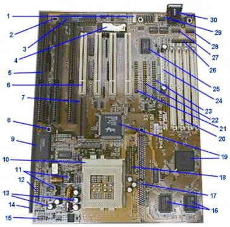

1
Ц разъем USB (USB header), 2 Ц установочное отверстие, 3
Ц контроллер клавиатуры (keyboard controller), 4 Ц микросхема BIOS
(flash BIOS ROM),
5 Ц разъем шины ISA
(ISA bus slot),
6 Ц разъем шины PCI (PCI bus slot), 7 Ц разъем
расширени€ мультимедиа (mediabus slot), 8 Ц установочное отверстие,
9
Ц микросхема часов с элементом питани€ (real-time clock/CMOS),
10
Ц разъем процессора (CPU socket),
11 Ц регул€тор напр€жени€,
12
Ц разъемы подключени€ индикаторов корпуса,
13 Ц конденсаторы,
14
Ц антистатическое покрытие, 15 Ц переключатели (jumpers),
16
Ц микросхемы эш-пам€ти 2 уровн€ (cache chips), 17 Ц разъем расширени€
эш-пам€ти, 18 Ц разъем расширени€ Tag-пам€ти (Tag RAM expansion
socket), 19 Ц набор микросхем Intel 430 HX (chipset chips),
20
Ц разъемы модулей пам€ти (SIMM sockets), 21 Ц разъем дисковода (floppy
header), 22 Ц разьем первого IDE устройства (primary IDE header),
23
Ц разъем второго IDE устройства (secondary IDE header),
24 Ц разъем
питани€ (power connector), 25 Ц контроллер ввода-вывода (I/O controller),
26
Ц разъем параллельного порта (LPT header),
27 Ц разъем 1 последовательного
порта (COM1 header), 28 Ц разъем 2 последовательного порта (COM2
header), 29 Ц разъем порта PS2 (PS2 mouse header), 30 Ц разъем
клавиатуры (keyboard connector)